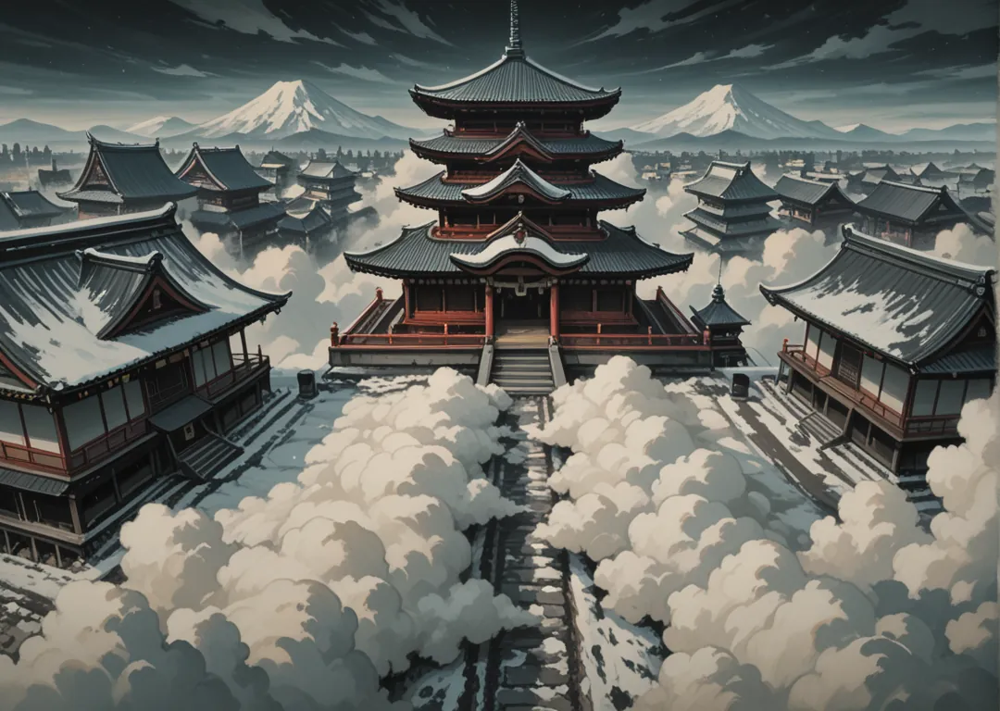

Mayores
Ryu (Dragón) · Fenikksu (Fénix) · Pegasasu (Pegaso) · Yunikon (Unicornio) · Hidora (Hidra)
Dentro de Kaze existe una zona remota con la montaña más alta de Shikoku, y en cuya inmensa cima (Tengudake) se sitúa el Yosai de Tengoku, la fortaleza de los cielos, por encima de las nubes y casi siempre nevado —p.4—. Es el Yosai divino, sede del Tenno.

Ryu (Dragón) · Fenikksu (Fénix) · Pegasasu (Pegaso) · Yunikon (Unicornio) · Hidora (Hidra)
Ningyo (Sirena) · Kimera (Quimera)
Una peregrinación al Tengudake: frío, altura y juicio del Tenno. Solo los dignos respiran arriba.
Ryu y Pegasasu debaten si Tengoku debe intervenir en la guerra de Yami o permanecer puro.
Montaña de 3 800 varas, siempre nevada, por encima de las nubes. El santuario de Tengoku es de madera clara y tejados dorados. El aire es tan fino que solo los iniciados pueden quedarse más de un día.
Tenno Amateru (ageless, voz como viento). No es Shogun sino emperador divino. Su heraldo es Ryu Haru, dragón anciano.
Tengoku valora la pureza. Festival del Solsticio donde se encienden 1000 faroles por los caídos de Ichikoku.
Daimyo Ryu Seiryu (ageless). Guarda el Espejo del Cielo.
Daimyo Hidora Mizuchi (5 cabezas tatuadas). Su veneno es antídoto para Yami.
Daimyo Ningyo Lir (voz hipnótica). Aparece solo con niebla.